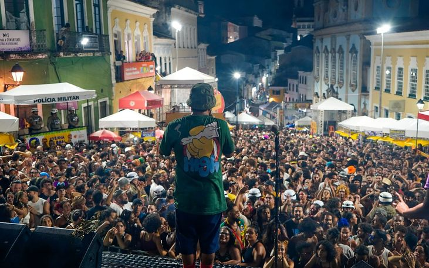
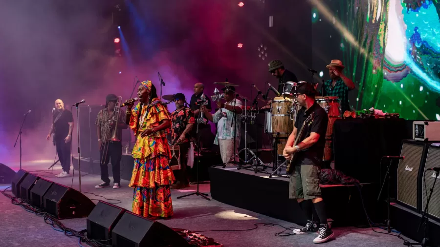
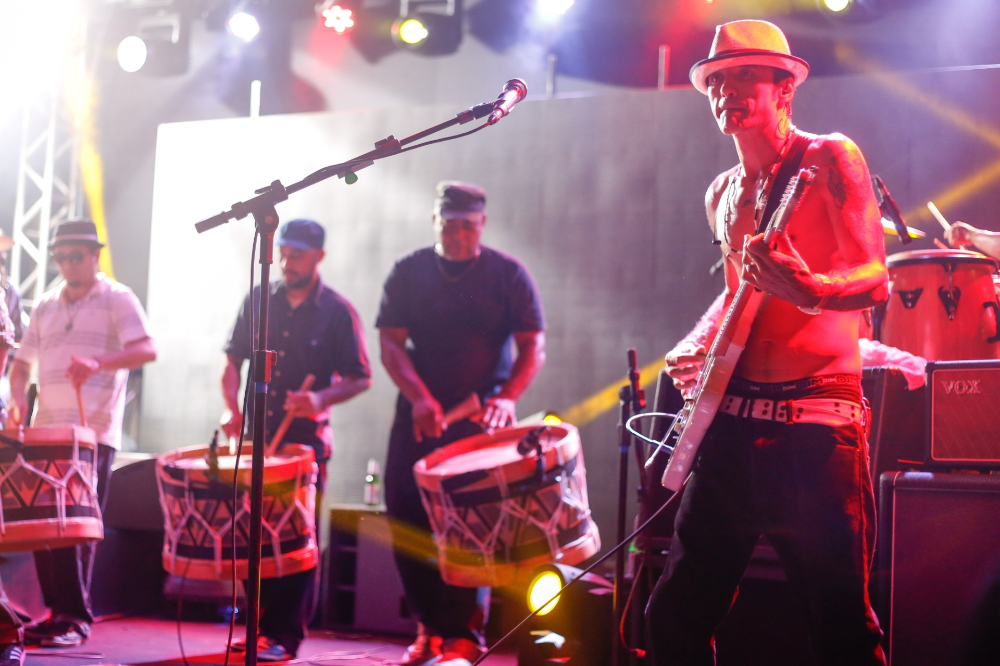

REGISTROS • AO VIVO
O SOM
EM IMAGENS.
Shows, encontros e momentos da história da banda.
01 — SHOWS
A força da Nação Zumbi no palco.



02 — MOMENTOS
Registros fora do palco e momentos da trajetória da banda.


REGISTRO AUDIOVISUAL
NAÇÃO ZUMBI
EM MOVIMENTO.
Se o vídeo não carregar, assista no YouTube.